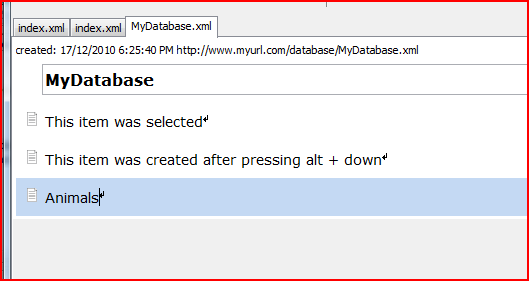
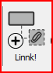
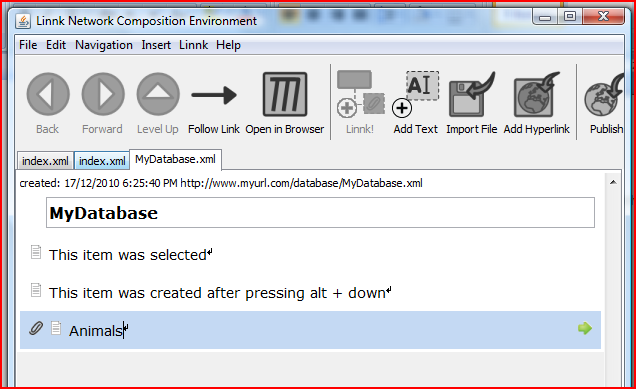
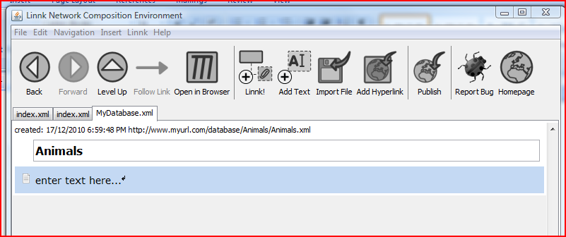
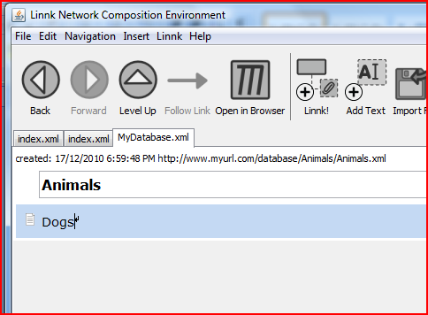

Linnk is all about allowing you to easily 'drill down' into concepts you describe with the software. This is best illustrated in an example:
First, add a text item 'Animals' to a document:

Select this item (by clicking on it). By using the action 'Linnk' you can link this item with a newly created page: again, you can trigger this action using a menu item or tool button or (more conveniently) using keyboard shortcuts.
== Using the Tool Buton ==
The tool button to trigger the Linnk action is [Linnk!]

Clicking this button, while the item 'Animals' is selected, should result in the following changed document:

The item animals should be annotated with a link icon and show a green arrow on the right.
You can navigate to the newly created document either by
- double clicking anywhere on the items 'Animals'
- clicking on the green arrow
- clicking on the tool button [Follow Link] or
- using the keyboard shortcut Ctrl + Right Arrow
- double clicking anywhere on the items 'Animals'
- clicking on the green arrow
- clicking on the tool button [Follow Link] or
- using the keyboard shortcut Ctrl + Right Arrow
All of these actions should bring you to the following page:

Note that Linnk has assigned a new address of this document .../database/Animals/Animals.xml, which helps to uniquily identifiy this document. You can edit this document in the same way as the root document (and Linnk it to further sub-documents).
== Using Keyboard Shortcuts ==
You can change the text 'enter text here...' to 'Dogs'.

Select the item 'Dogs' and press Alt + N (or on Mac OS X Alt + Ctrl + Right Arrow).
This item should be linked to new document 'Dogs'. Remeber that you can navigate to this document by pressing Ctrl + Right Arrow (or by using alternative ways described above).